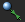
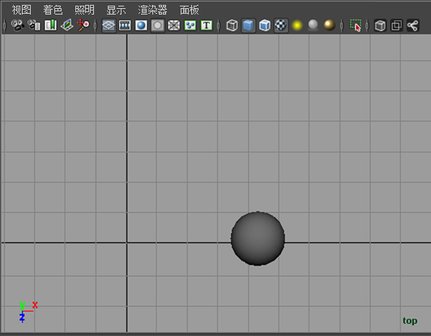

牛顿场会将对象拉向自身。这允许您创建效果，例如动态观察行星或绳球、碰撞球。该场基于这样一个原理，即宇宙中任何两个对象之间存在相互吸引的力并且该力与质量的乘积成比例。随对象之间距离的增加，拉力减小。
您可以使用牛顿场执行以下操作：
- 将对象吸引到一个单独的牛顿场。
- 将对象吸引到拥有牛顿场的 NURBS、多边形或粒子对象。
牛顿场受连接的对象的质量值影响。请参见对象的质量值。另请参见牛顿选项。
对象的质量值
自身有牛顿场或连接到牛顿场的所有对象都有默认的质量值。默认情况下，刚体的质量属性是 1。您可以通过在“属性编辑器”(Attribute Editor)中显示刚体以更改该值。
如果您将一个牛顿场添加到 NURBS 对象或多边形对象并且该对象不是刚体，则该对象具有一个等于其 CV 或顶点总数量的非属性质量。例如，具有 10 个 CV 的对象的质量为 10。
粒子对象的每个粒子质量属性控制其质量值。默认情况下，对象的每个粒子的质量值是 1。
一个单独的牛顿场没有质量属性，但默认质量值为 1。您无法更改该值。
示例：创建绕轨道运行的对象
创建绕轨道运行的对象
- 选择“窗口 > 设置/首选项 > 首选项”(Windows > Settings/Preferences > Preferences)，然后单击“类别”(Categories)列表中的“动力学”(Dynamics)。确保“自动创建刚体”(Auto Create Rigid Body)处于打开状态。
- 创建一个球体，然后将其定位在远离原点处，如下所示。 
- 选中球体后，从“Fx”菜单集中，选择“字段/解算器 > 牛顿”(Fields/Solvers > Newton) >
 。
。 - 选择“编辑 > 重置设置”(Edit > Reset Settings)以使用默认值，然后单击“创建”(Create)。
- 在“属性编辑器”(Attribute Editor)中，将“衰减”(Attenuation)设定为 0。
- 选择球体，然后单击“属性编辑器”(Attribute Editor)中的刚体选项卡。在“初始设置”(Initial Settings)区域中，将“初始速度”(Initial Velocity) Z 设定为 5。